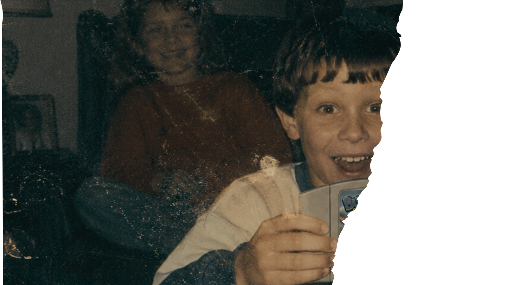

Arquivo Digital - Sistema v2.31
Status: PARCIALMENTE RECUPERADO
Última atualização: 18/06/2005
Os documentos referentes à franquia "Lebres & Coelhos" foram parcialmente recuperados após um processo de digitalização.
Grande parte do material foi destruída em circunstâncias desconhecidas.
QXMgY29ycmXn9WVzIGRvIHNpdGUgc2Vy428gZmVpdGFzLiBDb2VsaG9zIGUgbGVicmVzIHRlbSBzaW0gZGlmZXJlbudhLg==

Clique na imagem para ampliá-la.